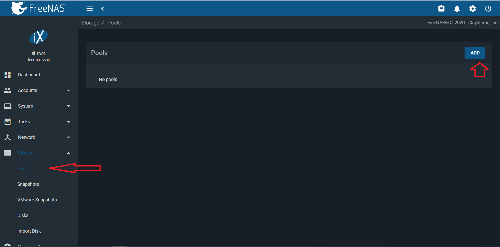
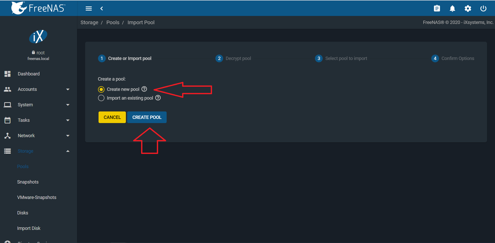
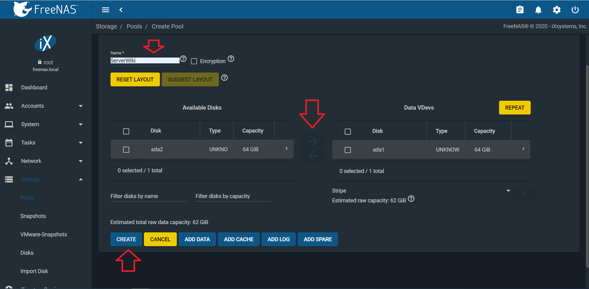
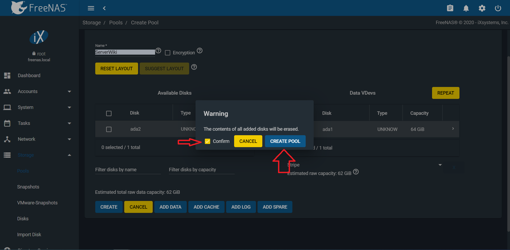
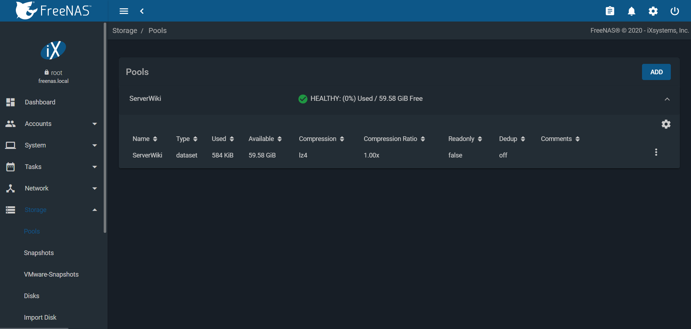
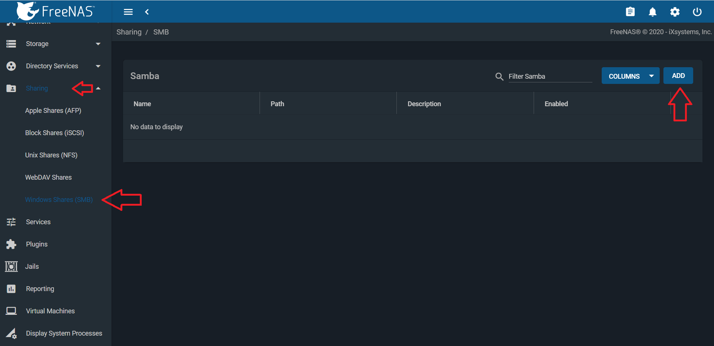
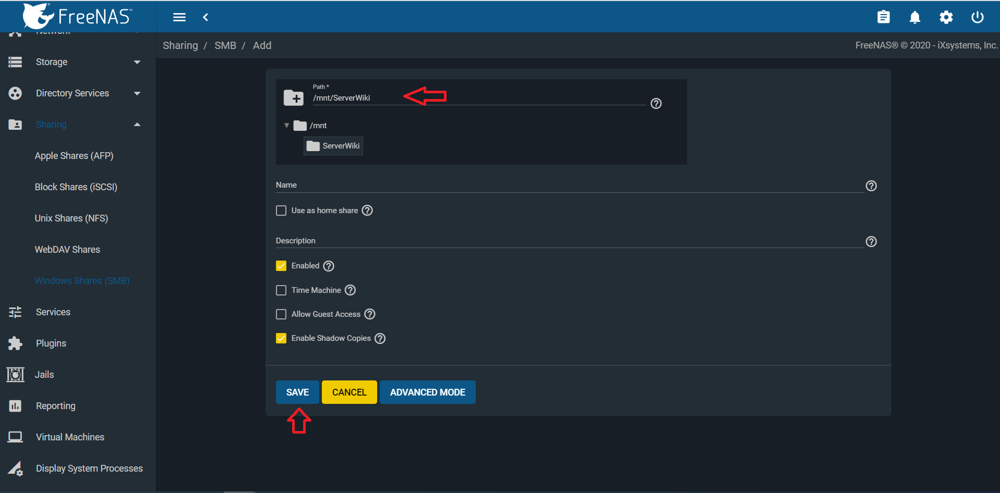

FREENAS
SEGURTASUN KOPIAK FreeNas-en HELBIDEA ERABILIZ
FreeNAS-a instalatzen amaitu duguneko IP-a jasoko dugu eta helbide hori bilatuko dugu bilatzailean, root erabiltzailea eta lehen instalazioan sartu dugun pasahitza erabiliz FreesNAS-eko aginte-mahaiakin topatuko gara.
Gure zerbitzariaren kopiak egiteko hurrengo pausoak jarraituko ditugu:
-







Azken pausu hau amaitzerakoan, gure zerbitzariaren segurtasun kopia amaituta izango dugu.